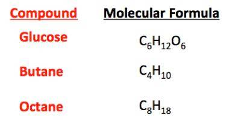
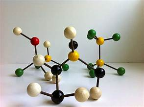

Molecular model
| Vietnamese | NOUN8. Mô hình phân tử |
|---|---|
| English | Molecular model |
| Pronunciation | /məˈlekjələr ˈmɑːdəl/ |
| Word type | noun (as labelled in the PDFs) |
Topic 3 — Meaning (Vietnamese)
Mô hình vật lý hoặc hình ảnh biểu diễn cấu trúc của phân tử
Meaning (English)
A physical or visual representation of the structure of a molecule (Mô hình vật lý hoặc hình ảnh biểu diễn cấu trúc của phân tử)
Example
Although glucose and fructose have different structures, they share the same molecular formula, C₆H₁₂O₆. (Mặc dù glucose và fructose có cấu trúc khác nhau, chúng có cùng công thức phân tử C₆H₁₂O₆.)
Topic 4 — Meaning (Vietnamese)
Hình thức mô phỏng cách sắp xếp các nguyên tử trong phân tử
Meaning (English)
A representation of the arrangement of atoms in a molecule (Hình thức mô phỏng cách sắp xếp các nguyên tử trong phân tử).
Example
A molecular model helps us understand the structure of methane (Mô hình phân tử giúp chúng ta hiểu cấu tạo của metan).
Images from the PDFs


